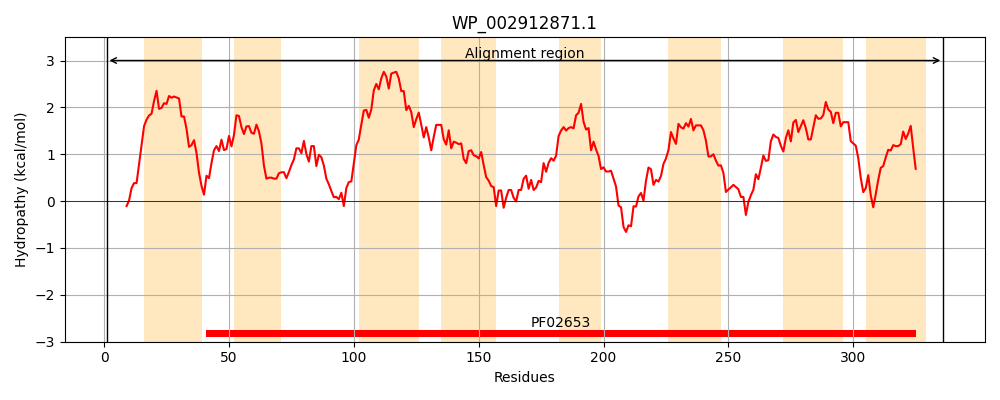
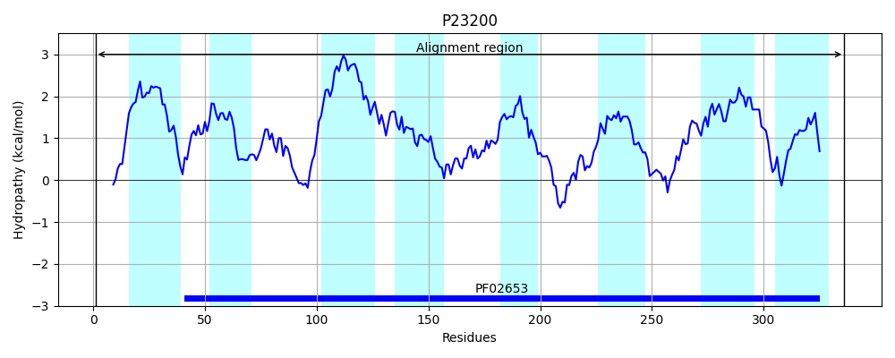
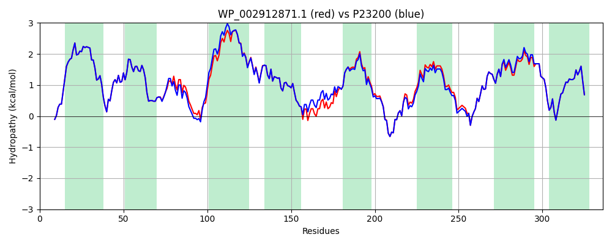

Hit Accession: P23200
Hit TCID: 3.A.1.2.3
Hit Description: gnl|BL_ORD_ID|9423 gnl|TC-DB|P23200|3.A.1.2.3 Galactoside transport system permease protein mglC - Escherichia coli.
Mach Len: 336
e:0.000000
Query TMS Count : 8
Hit TMS Count: 8
TMS-Overlap Score: 9.100000
Predicted Substrates:CHEBI:5418;glucose, CHEBI:5256;galactose
BLAST Alignment:
Score: 1608 , Bit scores: 624 bits, E-value: 0.0e+00, Alignment length: 336, Percentage identity: 95
Query: 1 MSALNKKSFLTYLKEGGIYVVLLVLLAIIIFQDPTFLSLLNLSNILTQSSVRIIIALGVAGLIVTQGTDLSAGRQVGLAAVIAATMLQAVDNANKVFPDMATMPIPLVILLVCAIGAVIGLINGIVIAYLNVTPFITTLGTMIIVYGINSLYYDFVGASPISGFDSHFSHFAQGFVALGSFRLSYITFYALIAVFFVWILWNKTRFGKNIFAIGGNPEAAKVSGVNVALNLLMIYALSGVFYAFGGLLEAGRIGSATNNLGFMYELDAIAACVVGGVSFSGGVGTVFGVVTGVIIFTVINYGLTYIGVNPYWQYIIKGAIIIFAVALDSLKYARKK 336
MSALNKKSFLTYLKEGGIYVVLLVLLAIIIFQDPTFLSLLNLSNILTQSSVRIIIALGVAGLIVTQGTDLSAGRQVGLAAV+AAT+LQ++DNANKVFP+MATMPI LVIL+VCAIGAVIGLING++IAYLNVTPFITTLGTMIIVYGINSLYYDFVGASPISGFDS FS FAQGFVALGSFRLSYITFYALIAV FVW+LWNKTRFGKNIFAIGGNPEAAKVSGVNV LNLLMIYALSGVFYAFGG+LEAGRIGSATNNLGFMYELDAIAACVVGGVSFSGGVGTV GVVTGVIIFTVINYGLTYIGVNPYWQYIIKGAIIIFAVALDSLKYARKK
Sbjct: 1 MSALNKKSFLTYLKEGGIYVVLLVLLAIIIFQDPTFLSLLNLSNILTQSSVRIIIALGVAGLIVTQGTDLSAGRQVGLAAVVAATLLQSMDNANKVFPEMATMPIALVILIVCAIGAVIGLINGLIIAYLNVTPFITTLGTMIIVYGINSLYYDFVGASPISGFDSGFSTFAQGFVALGSFRLSYITFYALIAVAFVWVLWNKTRFGKNIFAIGGNPEAAKVSGVNVGLNLLMIYALSGVFYAFGGMLEAGRIGSATNNLGFMYELDAIAACVVGGVSFSGGVGTVIGVVTGVIIFTVINYGLTYIGVNPYWQYIIKGAIIIFAVALDSLKYARKK 336 | Protein Hydropathy Plots: |
|---|
|  |  |
Pairwise Alignment-Hydropathy Plot:
|
|---|
|  |